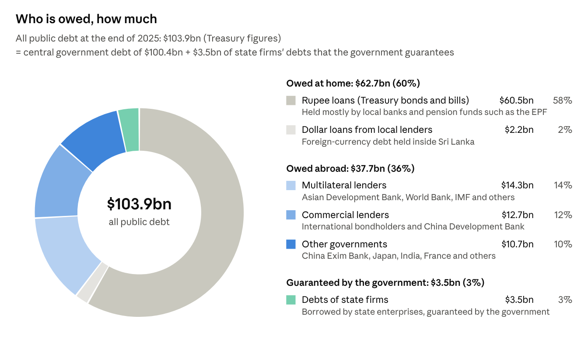
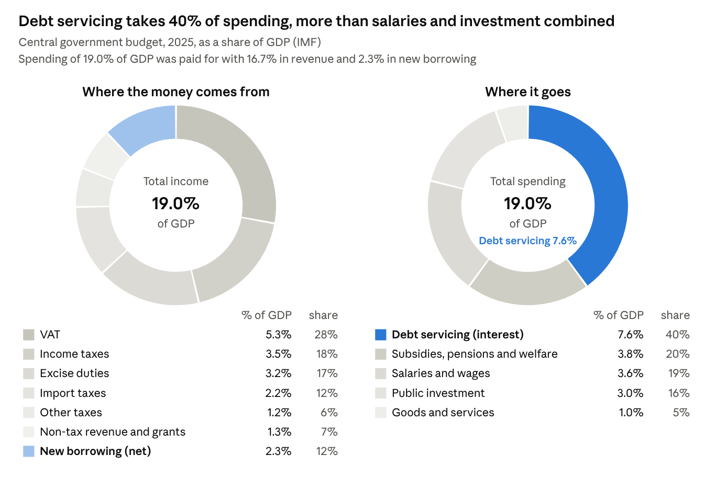
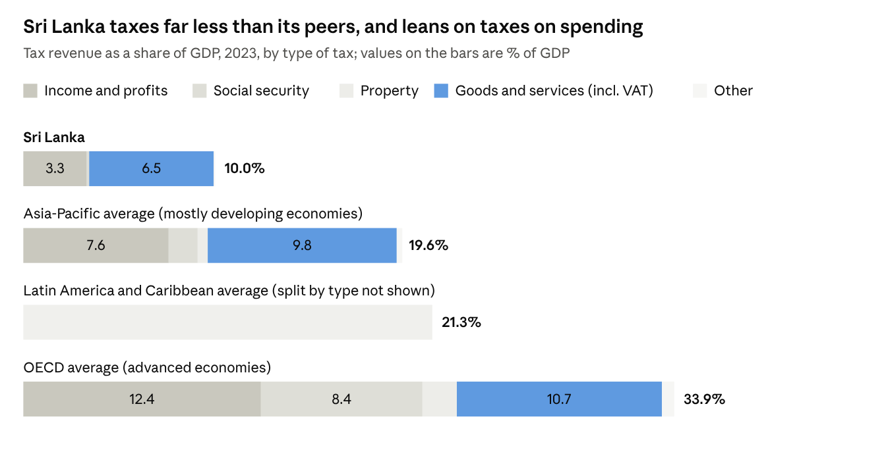
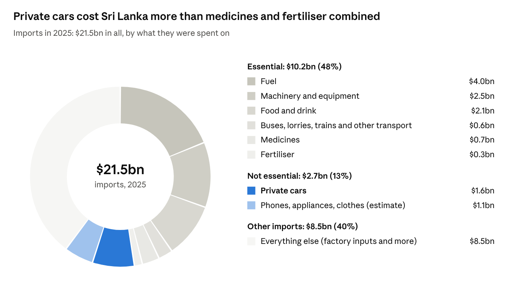

Blogs
Debt Crisis in Sri Lanka - Part 1
Nanthi Nanthikesan · November 2026
[This is the first of a series of blogs on Sri Lanka’s debt crisis: why we keep turning to the IMF for rescue, and how we might finally break the cycle. Blog (i) provides the context - the size of our debt, who our lenders are, the costs of managing it, and the measures the state has taken since 2022. The subsequent blogs will cover: (ii) the socio-economic burdens of these measures; (iii) IMF rescue rules, the global financial system, and their implications for democratic decision-making; (iv) recovery pathways from other countries; (v) lessons from our own experience; and (vi) towards a workable, just socio-economic system that addresses economic poverty and the social and environmental deprivation that reinforce the debt trap.]
In April 2022, Sri Lanka defaulted on its loans - stopped paying its foreign debts. Most of us remember what came next: queues for fuel and cooking gas, empty pharmacy shelves, power cuts, and prices that almost doubled in a year.
Four years on, the queues have gone. The economy grew by about 5% in 2025, and the country finished restructuring its foreign debt. It is tempting to think the debt problem is behind us. It is not. This blog sets out in plain numbers what the country owes, what it costs us every year, who is paying for it, and why the next shock from abroad could push us towards an 18th IMF programme. It ends with what we can do about it. We hope to move away from the standard prescriptions of the proponents of neoliberal approaches.
A quick overview
- The government owes about $104 billion, roughly what the entire country produces in a year.
- Six rupees in every ten of that debt are owed to lenders inside Sri Lanka, not abroad.
- Interest alone takes about 46% of everything the government collects (revenues).
- Most of the new taxes since 2022 are taxes on spending, which hit poorer families hardest.
- In 2025, we spent $1.6 billion on motor vehicles, more than on medicines and fertiliser combined.
- Every shock from abroad hits the same weak spots: fuel, fertiliser, tourism and remittances.
We owe about as much as the annual income of the country
At the end of 2025, Sri Lanka's public debt stood at $103.9 billion, about 95% of everything the economy produces in a year (its GDP). Think of a family whose debts equal a full year of its income, before paying for food, school fees or rent.
Many people assume most of this is owed to foreigners, and especially to China. It is not. About 60% is owed at home: to local banks, the Employees' Provident Fund (EPF) and other pension and insurance funds that buy government Treasury bills and bonds. Only 36% is owed abroad. A further 3% is debt of state firms that the government guarantees.
Most of our debt is owed at home

Source: Ministry of Finance debt update, 10 August 2026 (end-2025 figures).
There is a catch in the good news you may have read. The debt has fallen as a share of the economy, from 95.5% of GDP at the end of 2024 to 91.6% a year later (Source: Central Bank Statistics). That happened because the economy grew, not because much was paid back. In rupees, the debt is still climbing: from about Rs 31.1 trillion at the end of 2025 to Rs 32.0 trillion by June 2026.
Who are our foreign lenders?
China is our largest single country lender, but not our largest creditor. All Chinese lenders together are owed about $7.6 billion, around a fifth of what the government owes abroad. International bondholders ($10.3 billion after the restructuring) and the Asian Development Bank ($6.8 billion) are each owed more than any one Chinese lender.
The bondholders are mostly big Western investment firms, such as BlackRock, Amundi, T. Rowe Price and Morgan Stanley's investment arm, managing other people's pensions and savings. Some hedge funds also bought the bonds cheaply after the default, hoping to profit from the settlement. One holdout, a bank registered in St. Kitts and Nevis, refused the deal and is suing Sri Lanka in a New York court for full payment.
Did everyone share the pain fairly? It depends on how you measure it. The IMF says bondholders gave up about 42% of the value of what they were owed. The campaign group Debt Justice, using a different method, estimates they will get back about 80 cents for every dollar, against about 67 cents for government lenders such as China, Japan and India. On that measure, the private lenders, who had charged Sri Lanka the highest interest precisely because lending to us was risky, did better than the governments which lent us at lower interest rates.
And one deal is still a black box. China Development Bank is owed over $3 billion on commercial terms. Its settlement was signed in December 2024, but the terms have never been published, making them difficult to assess.
What it costs: Nearly half of what the government collects
In 2025, the government paid about Rs 2.5 trillion in interest, equal to 7.6% of GDP. That is about 46% of all the revenue it collected. Of every 100 rupees the government spent, about 40 went on interest and only about 16 on building roads, schools, hospitals and power.
Where the government's money came from, and where it went, in 2025

Source: IMF Country Report No. 26/111 (May 2026).
To put that in everyday terms: the 2025 Budget set aside Rs 2,950 billion for servicing debt. That was about 13 times the agriculture budget and about 5 times each of the health, education and transport budgets.
Most of this interest goes to lenders at home (about 87% in early 2025), because borrowing in rupees costs the government around 9% to 10% a year, far more than its foreign loans now cost after restructuring.
The restructuring bought time, not freedom. Payments on the restructured foreign debt fell from about $4.4 billion a year under the old terms to about $1.1 billion in 2025. But they rise again from 2028, and the interest on the new international bonds jumps from about 4% to over 9% after 2032. Meanwhile, every year the government must borrow about a fifth of GDP just to repay and roll over old loans. If interest rates rise, as they did in 2022, that bill rises immediately.
Tax revenue and its sources: VAT is about three times as Income Tax
Tax collection has more than doubled as a share of the economy, from 7.3% of GDP in 2022 to 15.4% in 2025, the highest in two decades. That was needed. The question is where this increase came from.
Most of the increase came from taxes on what we buy: VAT, raised to 18% with many exemptions removed; excise duties; and the Social Security Contribution Levy, a 2.5% tax on business turnover that is passed on in prices. In 2025 taxes on goods and services brought in about three-quarters of all tax revenue. Income taxes brought in about a quarter.
Why does that matter? A poor family spends almost everything it earns, so a tax on spending takes a bigger slice of its income than it does from a wealthy family that saves or invests much of its income. Part of the 2025 record was also a one-off: about 2.8 points of GDP came from the rush of car imports after the ban was lifted, and that money will not be there every year.
We tax far less than our neighbours, and lean on taxes on spending

Source: OECD, Revenue Statistics in Asia and the Pacific 2025 (2023 data). Sri Lanka's tax take has risen since, to 15.4% of GDP in 2025.
Compared with other countries, Sri Lanka collects very little from income and almost nothing from property. Our VAT rate of 18% is already close to the rate in rich countries, so there is little room left to squeeze more from spending. The room is in income, property and wealth.
Where our dollars went
Every dollar Sri Lanka spends abroad has to be earned first, by exports, tourism or the money our workers send home. So it matters what we spend those dollars on.
Motor vehicles cost more than medicines and fertilisers combined.

Source: Central Bank of Sri Lanka, Annual Economic Review 2025, Table 78.
In 2025, we spent $1.6 billion on motor vehicles, compared with $0.67 billion on medicines and $0.31 billion on fertiliser. The car bill alone equalled about a fifth of everything Sri Lankans working abroad sent home that year ($8.1 billion). And each new car keeps adding to the fuel import bill for the next 15 years.
This is not an argument for banning imports. In 2022 the crisis cut imports of medicines, fuel and fertiliser along with everything else, and people paid with queues, shortages and lost harvests. The point is to cut the right imports.
The same weak spots, hit again and again
In six years Sri Lanka has been hit by three big shocks from abroad, plus one it made itself:
- Covid (2020–21): tourism earnings fell by 81%, from $3.6 billion to $0.7 billion.
- The 2021 fertiliser ban: an overnight switch to "organic" farming. Rice output in the main season fell by almost 40% (Hector Kobbekaduwa Agrarian Research and Training Institute) and tea output hit a 26-year low in 2022 (Central Bank Statistics). We then spent scarce dollars importing rice.
- The Ukraine war (2022): world prices of oil, wheat and fertiliser jumped just as we ran out of dollars. Inflation peaked at 69.8% in September 2022, and food inflation at 94.9%.
- The West Asia war (2026): the Gulf supplies about half of our petroleum and about 40% of the money our workers send home. Fuel prices have been revised at least five times since February 2026, with an overall increase of close to 50% (Financial Times Sri Lanka; Newsfirst), inflation has climbed from below zero in 2025 to 8.0% in September 2026, and the IMF has cut its growth forecast for this year to 3%.
Notice the pattern. Each shock came through the same few doors: imported fuel, imported fertiliser and food, tourists, and workers in a handful of countries. Our reserves, about $6.9 billion, sound large, but one estimate puts the part that is freely usable at only around $1 billion. That is a thin cushion for a country that buys half its oil from a war zone.
And debt turns every shock into a bigger one. When so much of the budget already goes on interest, and a fifth of GDP must be refinanced each year, any bad year quickly becomes a debt problem. That is how countries end up back at the IMF.
Way forward
The 2022 crisis was not simply a case of bad luck. A cumulation of bad policies and practices resulted in a recurring debt problem that faced an exceptionally powerful shock. The shocks will keep coming. Whether they become another crisis depends on the choices we make now.
There are two tempting answers. The first, which Sri Lanka has followed for the past 50 years, is to open the doors to global markets: borrow heavily abroad and let finance and investment decide what the economy needs. It has brought some economic "vibrancy", but it has cost us dearly. It led to a debt crisis that paralysed the country, intensified socio-economic inequality, and contributed to two civil wars. The second is to close the doors and aim for self-sufficiency. That is not feasible in the 21st century, least of all for a small country with limited natural resources and industry. Sri Lanka needs fuel, medicines, machines, and ideas. The real question is what to trade (import and export), how to absorb the shocks that come with it, and how to rebalance power between owners of capital and those who have to work.
The subsequent blogs will address the following questions: How to:
- Bring down the interest bill at home.
- Share the burden fairly and make the consequences of decisions transparent.
- Understand the implications of the international rules of financialization (IMF and Lenders).
- Learn lessons from our experience and those of other countries to avoid the recurring debt trap.
- Avoid the "formula trap" - can all 54 countries that are in debt crisis now export their way out of debt?
Where these numbers come from
Central Bank of Sri Lanka, Annual Economic Review 2025 and monthly external sector data; Ministry of Finance, debt bulletins and debt update (August 2026); IMF Country Reports No. 25/339 and 26/111; OECD, Revenue Statistics in Asia and the Pacific 2025; Debt Justice; and Sri Lankan news reports of official releases (Ada Derana, The Morning, EconomyNext, Newsfirst). Figures were checked against Central Bank tables in October 2026. The usable-reserves figure is an independent estimate, not an official one. A fully referenced version of this analysis is available as a research article.